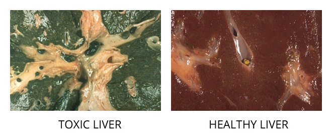
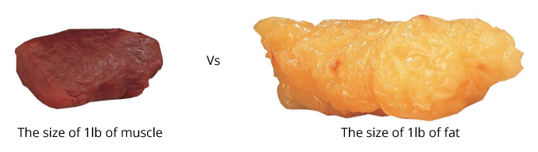

Únete al Reto
- Disfruta de descuentos para miembros
- Alíate con otros miembros del reto
- Gana productos gratis, dinero en efectivo y premios


Cuando consumimos alimentos, nuestro cuerpo lo degrada para obtener la nutrición, absorbe el bien, mientras que elimina los residuos. Aquí es donde los problemas comienzan a desarrollarse. Cada vez que consumimos algo no orgánico, que ha sido tratada con pesticidas, hormonas y productos químicos. El cuerpo no sabe qué hacer con estos elementos y termina almacenandolos, por lo general en el hígado. Con el tiempo, esto provoca la acumulación, y puede hacer que todo el cuerpo este desequilibrado.
El ZoiVi DTX está diseñado para ayudar a eliminar las toxinas que se han acumulado de los alimentos a través del tiempo. El proceso comienza con el hígado, y se completa en el resto del cuerpo.
A medida que envejecemos, comenzamos a experimentar problemas de salud, y aunque la mayoría atribuyen estas cosas a la vejez, la verdad es que sólo una cuestión de llevar al cuerpo a un equilibrio. El DTX está diseñado para ayudar a eliminar las toxinas almacenadas en el cuerpo, comenzando con una limpieza de hígado completa, limpieza total del cuerpo, y en sólo 24 horas! La combinación única de vitamina E natural combinado con aceite de cártamo orgánico crea un efecto de limpieza como ningún otro.
Podemos garantizar resultados para cualquier persona dentro de 2 días de usar el DTX. Las pruebas clínicas muestran los residuos eliminados están compuestos de fluoruro (70%), sulfuro (100%), SO4 (100%), mercurio (40%), y nitrato (70%). La persona promedio elimina cerca de 2-5 libras en sus primeras 24-48 horas del uso de el DTX, por el peso del agua, la eliminación de toxinas, y el aumento del metabolismo. El siguiente paso es optimizar la salud a través de la suplementación adecuada y la nutrición.

Utilizamos la más alta calidad y la forma más pura de todos los ingredientes fabricados en instalaciones inspeccionadas por la FDA para maximizar sus resultados. Para obtener un beneficio óptimo, se combinan con otros productos ZoiVi.
* Este producto se fabrica en una instalación de cGMP regulados por la FDA.
* Este producto no está destinado a diagnosticar, tratar, curar, mitigar o prevenir ninguna enfermedad o condición médica. Estas declaraciones no han sido evaluadas por la Administración de Alimentos y Drogas.
Mantener fuera del alcance de niños. Almacene en un lugar fresco y seco.
(Amylases, lipase, proteases and lactase)
Ayurvedic Amla, Bahera, Harada digestive aid (Emblica officinalis, Terminalia belerica, Terminalia chebula) (seedless plant fruits)
Al despertar al día siguiente, beber 6 oz (177 ml) DTX1 y las ultimas 6 oz (177 ml) de la mezcla de DTX1 dos horas más tarde.
Nota: Bebe el DTX2 inmediatamente después de prepararlo, justo antes de irse a dormir. Para obtener el máximo efecto acuestate de tu lado derecho durante 20 minutos después de beber el DTX2.
Mantener fuera del alcance de los niños. Almacene en un lugar fresco y seco.
Levadura, Trigo, Azúcar, Sal, Productos Lácteos, Pescado, Los Derivados de Animales, Conservantes, Colorantes, Ni Sabores Añadidos.
Los ingredientes sinérgicos de nuestra DTX1 y DTX2 permiten una limpieza suave pero completa. Los ingredientes se centran en diferentes funciones que permiten la desintoxicación de todo el cuerpo.
Alivia la limpieza del hígado y la vesícula biliar mediante la activación de contracción de la vesícula y de la relajación de los músculos que controlan la liberación de la bilis en el intestino. Apoya la desintoxicación y eliminación de piedras pequeñas. Beneficios para la salud del ácido ascórbico están más allá de la desintoxicación del cuerpo, como estímulo inmunológico, anti-envejecimiento, la absorción de minerales y las alergias.
Phyllanthusamarus se ha utilizado en la medicina ayurvédica desde hace más de 200 años para el asma, infecciones bronquiales y genitourinario, infección bacteriana del tracto GI, y enfermedades oculares. Además, la planta se utiliza con éxito para la protección del hígado / desintoxicante y una medicina tradicional para la ictericia y la hepatitis viral B.
Se considera uno de los pilares de la medicina ayurvédica. Tripala consiste en cantidades iguales de tres hierbas medicinales: Emblica officinalis (AMLA), Terminalia chebula y Terminalia bellirica. Triphala aumenta la desintoxicación del cuerpo, estimulando el flujo de la bilis y tiene beneficios especiales de cada planta en términos de protección del hígado contra los radicales libres, virus de la hepatitis, y los productos químicos que dañan el hígado.
Este ingrediente es uno de los más poderosos antioxidantes naturales y, además, se ha utilizado como una ayuda digestiva, protector de hepato y anti-diabético. Los estudios realizados por Rafatullah (2002), Suryanaraya et al (2004), Rao et al (2005) y Yokozawa (2007) demostraron la eficacia de la curación de amla en los casos de úlcera de estómago y enfermedades del hígado inducidas por carcinógenos. Además, el amla reduce la fibrosis hepática, que es un importante preludio de trastornos hepáticos crónicos, incluyendo la inflamación crónica, cirrosis y carcinoma celular hepato.
En Ayurveda, Terminalia Bellerica (TB) tiene un uso digestivo, urinario y enfermedades del tracto respiratorio. También es muy conocido un fuerte rejuvenecedor natural. Los estudios descubrieron TB reduce los niveles de lípidos en el cuerpo, especialmente el corazón y el hígado. En otras palabras, la tuberculosis es beneficioso en la prevención de esteatosis hepática y trastornos del corazón.
El efecto protector del extrae hepato chebula (TC) puede estar mediado por su acción antioxidante y las actividades de estabilización membrana _. TC extrae la administración de la toxicidad del hígado que se desencadena con antibióticos para el tratamiento de la tuberculosis impedido alteraciones bioquímicas e histológicas.

Cuando trotar y contar calorías no es suficiente, aumenta las calorías que quemas con el suplemento dietético ZoiVi Burn. Mientras que hacer ejercicio con regularidad y comer una dieta equilibrada es clave para cualquier plan de control de peso, nuestro cuerpo necesita el impulso de vez en cuando para poder lograr los resultados y el rendimiento máximo.
Estamos sobrealimentados y desnutridos. Como resultado, las enfermedades y muertes relacionadas con la obesidad hoy en día están aumentando. Enfermedades asociadas con la obesidad son: enfermedades cardíacas (# 1), cáncer (# 2), ataque al corazón (# 3), diabetes (# 7). La obesidad no sucede de la noche a la mañana, se trata de un aumento gradual de peso con el tiempo. El problema es que en el momento en que alguien se da cuenta, las soluciones efectivas para bajar de peso son difíciles de encontrar, muy caro, y suelen ser temporales.
¿Cómo sabes cuando algo es malo, bueno o genial? Es muy sencillo: la lógica. Se sabe que el cuerpo de cada persona es diferente, el estilo de vida que llevan, horas de trabajo, los hábitos alimenticios, la genética y los patrones, incluso para dormir. Algunos aumentan de peso más rápido que otros, algunos pueden comer y comer y parece que nunca suben una libra, mientras que otros apenas comen y aún suben! Mientras algunos tratan muchos productos y programas diferentes que parecen funcionar, en realidad acaban en decepción.
La mayoría de los productos para bajar de peso en el mercado actual intentan mejorar el "síntoma" en lugar de el origen del problema. Así que usted puede probar, y puede funcionar temporalmente, pero terminan subiendo el peso perdido con un poco de sobrepeso. Lo que necesita es un sistema que comienza en el origen y continúa trabajando hasta conseguir el resultado deseado.
Los métodos que son utilizados por el cuerpo para funcionar son las mismas sin importar quién es el individuo. Las grasas se descomponen de la misma manera , se almacenan de la misma manera , y se queman la misma manera. Cuando el cuerpo está equilibrado, funciona a pleno rendimiento. Sin embargo , la mayoría de los alimentos que comemos hoy en día carecen de una nutrición adecuada, haciendo que el cuerpo reduzca la velocidad y se fatigue con facilidad. Comer carbohidratos " vacíos”, comidas rápidas altas en calorías, trabajar largas horas, y respirando aire contaminado son todos una causa de un desequilibrio en el cuerpo.
En ZoiVi hemos formulado una mezcla de 8 pasos propietaria única para trabajar con su estilo de vida que le permite conseguir el cuerpo ideal. Ahora usted puede perder peso, tonificar músculo, y sentirse bien. El ZoiVi Burn se centra en mejorar el control de peso, producción de energía, y la definición muscular a través de una mezcla natural de extractos de plantas y raíces.
A continuación se muestra un ejemplo de la diferencia de tamaño por 1 libra de músculo que se compara a 1 libra de grasa. Puesto que el músculo es más denso, se requiere más energía para funcionar. Esto se traduce en quemar calorías aún más rápido. La mezcla de masa muscular en el ZoiVi Burn está diseñado para apoyar el desarrollo de la masa muscular.

Coleus forskohlii root extract, Garcinia cambogia fruit extra, Commiphora mukul gum exudates (7.5% Guggulsterones), Black pepper (piper nigrum) fruit extract, 95% piperine, Gymnema sylvestre leaves (Gymnemic acids)
Non-GMO Rice Flour, Non-porcine Gelatin Capsule, FD&C Red #40
Mantener fuera del alcance de los niños. Almacene en un lugar fresco y seco.
Levadura, Trigo, Azúcar, Sal, Productos Lácteos, Pescado, Los Derivados de Animales, Conservantes, Colorantes, Sabores Ni Añadidos.
Los ingredientes sinérgicos del ZoiVi Burn permiten mejores resultados, especialmente cuando se combina con el ZoiVi DTX y ZoiVi EMZ.
Los ingredientes patentados mundialmente premiados y altamente activos en el ZoiVi Burn están respaldados por la investigación clínica en la industria de la pérdida de peso en la actualidad. La mezcla termogénica que consta de Coleus forskohlii y la piperina estimula el proceso de generación de energía celular y activamente promueve un aumento en la tasa metabólica del cuerpo. Forskolina del coleus forskohlii ayuda a aumentar la masa magra corporal, aumentando la tasa de lipólisis (descomposición de las grasas). La piperina aumenta la absorción de nutrientes, mientras que estimula los procesos metabólicos, y mejora la eficacia de todos los ingredientes en el ZoiVi Burn.
La combinación única de la forma especial de ZoiVi de el extracto de fruta Garcinia Cambogia y hojas de Gymnema sylvestre aumenta la capacidad del cuerpo para suprimir el apetito. Gymnema sylvestre significativamente reduce los efectos metabólicos de azúcar al impedir que los intestinos absorban las moléculas de azúcar durante el proceso de la digestión. Al cambiar la absorción de azúcar en el sistema también cambia los niveles de azúcar en la sangre.
El beneficio clave de la Garcinia cambogia está en su compuesto llamado ácido hidroxicítrico (HCA). Estudios confirman que HCA se cree poder bloquear la conversión de azúcares y almidones en grasas (inhibe la producción de grasa). Aumento en el metabolismo de la grasa por HCA estimula el almacenamiento glucógeno en el hígado apoyando la saciedad y la supresión de apetito. HCA también estimula el metabolismo para quemar grasa. El HCA de ZoiVi se combina con garcinol para ser más potente que el HCA solo.
Guggulsteronas es un compuesto derivado del árbol Commiphora mukul que han sido utilizado para bajar los niveles de colesterol naturalmente y apoyar la función tiroidea. Para evaluar la eficacia de las Guggulsteronas para facilitar la pérdida de peso, 22 pacientes obesos fueron estudiados en un ensayo clínico. Todos los pacientes tenían hipercolesterolemia, hipertensión, enfermedades de corazón, y diabetes asociada con su obesidad. Se les dieron suplementos Guggulsteronesa a los sujetos de estudio durante 15 días a un mes. Al final del período del estudio, todos los pacientes habían experimentado una pérdida de peso significante, así como reducciones de colesterol en el suero y fosfato de lípidos en el suero.
Las catequinas de Camellia sinensis incluyendo EGCG (polifenoles del té verde) mezclado con acetil L-carnitina (derivados de aminoácidos) contiene antioxidantes para la producción de energía y el aumento de las funciones metabólicas. El papel fundamental para la L-carnitina es de transportar ácidos grasos para permitir la oxidación de las grasas. Los ácidos grasos son una de las principales fuentes de energía que el cuerpo utiliza, y la oxidación es el proceso por el cual se descomponen para generar energía para el cuerpo y aumentar la energía celular en el cerebro, mejorando así el rendimiento mental.
El picolinato de cromo apoya el equilibrio de los niveles lípidos y control glucémico. Esta es una parte importante para mantener un cuerpo sano. Los hidratos de carbono con puntuaciones de alto índice glucémico (GI) causa que la glucosa y los niveles de insulina surgan. Esta uctuación rápida de los picos de insulina pueden dar lugar al aumento de peso y en la mayoría de los casos, diabetes.
Comidas ricas en calorías están en todas partes estos días, y con esas calorías provienen grandes cantidades de hidratos de carbono. El extracto de Phaseolus vulgaris bloquea los hidratos de carbono para que no sean absorbidos. En unos 30 días los sujetos del estudio clínico que recibieron extracto de Phaseolus vulgaris con una dieta rica en carbohidratos, 2000-2200 calorías tuvieron una significativa reducción de peso corporal, índice de masa corporal (IMC), masa de grasa, grosor del tejido adiposo, y circunferencia en la cintura/cadera/muslo, mientras que el mantenimiento de la masa corporal magra en comparación con los sujetos que recibieron los placebos.
La elección de alimentos saludables son un buen comienzo para promover la salud, pero esto representa sólo el primer paso. Para beneficiarse de todos los componentes nutritivos de los alimentos, es necesario un sistema digestivo saludable. Hoy, decenas de factores, incluyendo la genética, estilos de vida estresantes, la mala alimentación, los alimentos procesados y el entorno influyen en la digestión. Como complemento de una dieta saludable y estilo de vida con las enzimas digestivas es el siguiente paso en la salud.
Tanto si eres un atleta profesional que intenta permanecer en condición óptima o un padre ocupado tratando de mantenerse delgado y saludable, mientras que malabares con un millón de cosas, el ZoiVi EMZ apoya la digestión saludable, la entrega de nutrición óptima y mucho más. Una fórmula de alta calidad a base de enzimas, el ZoiVi EMZ ofrece la única combinación de enzimas vegetarianas de nutrientes avería, una mezcla de salud digestiva, mezcla de bio-disponibilidad de máxima absorción, todos con un nivel de actividad total de más 185,000 unidades por cápsula. Nuestra fórmula integral de enzimas digestivas incluye enzimas altamente activas con una amplia gama de especificidades necesarias para digerir los alimentos más comúnmente encontrados en la dieta humana. Una vez que la comida se descompone en nutrientes simples, el cuerpo puede asimilar estos para energía, el crecimiento y la reparación. *
El complejo multi-enzimático que es el componente clave en nuestro EMZ es lo que permite al cuerpo optimizar su descomposición de la grasa, productos lácteos, gluten, proteína, carbohidratos, fibra y otros nutrientes. Esto ayuda a evitar el exceso de comer y asegurarse de que el cuerpo recibe la máxima nutrición de todo lo que comemos, lo que impide comer en exceso o la sensación de hambre.
La combinación de raíz de rábano negro y rizomas de jengibre apoyan los procesos digestivos del estómago y lo protegén, mientras que la actividad enzimática que tiene lugar garantiza el máximo efecto y los resultados inmediatos. Esto ayuda a evitar la sensación de hinchazón o pesadez en el estómago.
La mezcla para la digestión saludable en el ZoiVi EMZ aumenta la absorción al tiempo que estimula el apetito correctamente. La combinación que se encuentra en el EMZ permite el cuerpo haga un uso apropiado de los alimentos que se metabolizan, y aliviar la sensación de comer en exceso o flatulencia.
Más importante de lo que comes, ¡es lo que absorbes! Para un estilo de vida verdaderamente saludable, el cuerpo debe poder absorber los nutrientes suficientes para mantenerse a sí mismo, y la falta de absorción conduce a la deficiencia. Esto provoca presión sobre la mayoría de los órganos principales del cuerpo, el estrés en el tracto intestinal, e incluso el estrés sobre el sistema inmunológico.
La causa de síntomas como acidez estomacal, reflujo ácido, hinchazón abdominal, indigestión, gas y el estreñimiento es debido a la falta de enzimas en su dieta. Incluso si usted come alimentos saludables, enzimas en los alimentos se destruyen inmediatamente cuando se expone al calor. Una falta de enzimas no permite que su cuerpo absorba vitaminas y minerales importantes que se encuentran en los alimentos que consume. La fórmula ZoiVi EMZ está diseñado para complementar la falta de enzimas en el cuerpo, lo que permite la máxima absorción de nutrientes.
Cuando tienes hambre, tu cuerpo te esta diciendo que necesita nutrición, no comida. La mayoría de personas comen de más, o tienen hambre otra vez después de una comida, ya que su cuerpo no puede absorber suficiente nutrición de la comida. El EMZ ayuda a aumentar la absorción de estos nutrientes, ayudando al cuerpo a descomponer los alimentos más rápido. Cuanto más rápido se absorber la nutrición, más rápido se elimina el hambre y los antojos y mejora la energía naturalmente debido a una mejor absorción de nutrientes. Las enzimas son necesarias para todos, especialmente para la aptitud y el apoyo de control de peso.
Sí. Sensibilidad a los alimentos y la intolerancia es una señal de que su sistema digestivo no puede descomponer ciertos alimentos. El EMZ se compone de enzimas que apoyan la digestión de los alimentos que usted toma. La fórmula del ZoiVi EMZ contiene las enzimas de lactasa y proteasa, que apoyan la descomposición del gluten proteína que se encuentra en muchos granos, alimentos y condimentos. La lactasa es una enzima que ayuda a la descomposición de la lactosa, que se encuentra en los productos lácteos, en azúcares simples que su cuerpo puede utilizar.
Hay un estudio que fue realizado por el Dr. Max Wolf, un ex profesor de la Universidad Fordham de Medicina, en 347 pacientes con trastornos circulatorios. Los resultados mostraron que 87% de los pacientes estaban completamente libres o casi libres de cualquier variedad de síntomas después de tomar enzimas. Otro estudio descubrió que luchadores profesionales que toman enzimas pueden recuperarse de una lesión en 7 días, mientras que los luchadores en placebos les tomó 16 días para recuperarse.
 Enzimas Proteolíticas
Enzimas ProteolíticasFat and Dairy Enzymes - 3,300 Total activity
(Lipase & Lactase)
Gluten and Protein Enzymes - 160,018 Total activity
(Exo-peptidase, Protease DDP-IV, Bromelain, & Proteases)
Carbohydrate Enzymes - 17,850 Total activity
(Amylase, Glucoamylase, Invertase, Maltase, Alpha-galactosidase)
Fiber & Nutrient Enzymes - 5,125 Total activity
(Cellulase, Hemicellulase, Beta-gluconase, Phytase&Xylanase)
Non-GMO Rice Flour, Capsula Vegetariana
Mantener fuera del alcance de los niños. Almacene en un lugar fresco y seco.
Levadura, Trigo, Azúcar, Sal, Productos Lácteos, Pescado, Los Derivados de Animales, Conservantes, Colorantes, Sabores Ni Añadidos.
Normalmente, los alimentos que comemos son la fuente de las enzimas que necesitaríamos para que nuestro sistema pueda funcionar. La cuestión está en la comida en sí, lo que más a menudo se cocina. El proceso de cocción mata todas las enzimas importantes y valor nutritivo, dejando literalmente "vacío" los alimentos. En pocas palabras, la mayoría de los alimentos que comemos están muertos, y carecen de las enzimas que necesitamos para mantener las funciones diarias óptimas de nuestros sistemas.
Cuando carecemos de enzimas para descomponer ciertos nutrientes, nuestro cuerpo es incapaz de absorber la nutrición necesaria. Esto provoca una deficiencia, y hace que nuestros cuerpos envíen señales diciéndole a nuestro cerebro que siga comiendo. Esto a menudo lleva a comer en exceso y aumento de peso.
Mediante el suministro de las enzimas que nos faltan, naturalmente, apoyamos la capacidad de nuestro cuerpo para que pueda descomponer y absorber los alimentos. La absorción de nutrientes mejorada reduce antojos, aumenta el metabolismo, mejora la digestión, y apoya una mejor eliminación de desechos. Este proceso también ayuda a las personas a controlar su peso. Cuando comemos, el hígado descompone las calorías en la comida con las enzimas que se supone que estan en la comida. Pero si no hay suficientes enzimas en la comida, entonces cualquier caloría adicional entra en el almacenamiento, que es lo que conocemos como grasa. ¡La grasa es simplemente las sobras de calorías que usted puede agarrar!
Para la medida, cada 3500 calorías equivalen a una libra de grasa pura! Así que si hay algún exceso de grasa en el cuerpo que queremos eliminar, sólo tenemos que hacer que sea más fácil para nuestro cuerpo para deshacerse de las calorías extra. Esta es la potencia funcional del ZoiVi EMZ.
¡La mezcla compleja de 16 enzimas de forma pura aseguran los efectos máximos y se puede sentir en cuestión de minutos! Con un nivel de actividad total de 185,000 unidades el EMZ inicia en la fuente de nutrición y lo entrega en el resto del cuerpo. La actividad enzimática significa la habilidad de una enzima para poder producir resultados dentro de su sistema. Cuanto mayor sea la actividad más potente y eficaz, hace la tensión menor en el cuerpo para que realice su función.
Apoya la producción de energía, control de peso, control de apetito, y aumenta la absorción de nutrientes. Esto puede conducir a hábitos alimenticios regulares y saciedad más rápida, una parte integral de control de peso y la salud.
Apoyan la digestión de las proteínas para reducir el riesgo de sensibilidad a los alimentos, toxinas, y los radicales libres. *
Alentan la digestión más completa de grasas y lípidos para apoyar el páncreas, el hígado, la vesícula biliar y la salud y el bienestar. *
Apoyan la digestión de los hidratos de carbono para la reducción de las intolerancias alimentarias y el alivio de la indigestión ocasional y gas. *
El EMZ de ZoiVi es un suplemento enzimático diseñado para ayudar a promover la disponibilidad y absorción de los nutrientes, la salud y la vitalidad de las células, mejora la digestión en general y la salud del sistema inmunológico. *
Aunque la FDA (Administración de Alimentos y Medicamentos) no regula los productos alimenticios como el EMZ, hay sub-normas que se han establecido para asegurarse de las normas de seguridad de más alta calidad y designados por la FDA llamado cGMP (buenas prácticas de fabricación actuales). Este producto se fabrica en una instalación de cGMP regulados por la FDA.
* Estas declaraciones no han sido evaluadas por la FDA. Este producto no está destinado a diagnosticar, tratar, curar o prevenir ninguna enfermedad.
Una de las muchas maneras de interpretar el Genki en japonés es simplemente "sentirse bien", o para ser más específico "saludable". Ahora más que nunca, es necesario asegurar que su cuerpo este recibiendo más que las vitaminas y minerales necesarios, que no somos capaces de encontrar en los alimentos diarios.
Genki es el primer multi-vitaminario verdaderamente completo con un exclusivo anti-inflamatorio, anti-envejecimiento, omega, y una fórmula de rejuvenecimiento celular. La mezcla patentada de ZoiVi consiste en nuestra patente pendiente Nano HC3, la fórmula Resvera-Z, 150mg de CoQ10, y más de 50 ingredientes naturales de alta potencia sinérgicamente combinados para mejorar todas las funciones del cuerpo esencial para una salud óptima. *
Genki es una sofisticada y deliciosa mezcla de:
Es muy poco probable que nuestra dieta por si sola pueda proporcionar todos los nutrientes que nuestro cuerpo requiere.
¿Cuántas personas hacen una dieta adecuada y equilibrada todos los días o incluso la mayoría de los días? La dieta óptima sería con frutas y verduras orgánicas frescas, granos enteros, productos lácteos bajos en grasa y pescado sin mercurio, pollo sin piel y carnes con bajo contenido de grasas saturadas y colesterol. Pero nuestra dieta típica consiste en comidas rápidas cuatro o más veces a la semana, y la mantequilla de maní, dulces, refrescos cargados de azúcar, galletas de máquinas expendedoras y otros alimentos que tienen muy poco valor nutricional
Debemos entender primero las normas de formulación de muchos otros productos que los mercados se basan en la actualidad:
MDR se refiere al requerimiento mínimo diario
¿De dónde vienen todas estas normas confusas? La respuesta es los diversos grupos de recomendaciones desarrolladas que resultan estar basadas en normas estadísticas irreales, con vistas a las diferencias individuales. El requerimiento mínimo diario (MDR) en realidad se refiere a la cantidad mínima absoluta que se necesita de la vitamina, un complejo simple con una cantidad que le impide obtener una deficiencia de vitaminas, como el escorbuto por falta de vitamina C.
Para obtener buenos beneficios para la salud, es muy importante conseguir por lo menos el 100% del valor diario (DV) para la mayor cantidad de vitaminas y minerales como sea posible, que le dará el mínimo necesario para prevenir las principales enfermedades carenciales. Sin embargo, ¿qué pasa con los problemas derivados de la ingesta de las vitaminas marginales - de estar cerca de "correr vacío?
Genki está formulado con las más altas calificaciones y purezas de cada ingrediente crudo, sin ningún tipo de aditivos, azúcares, o incluso estearatos de magnesio que la mayoría de los productos en el mercado contienen.
El problema con el multivitamínico común es la falta de eficacia. La mayoría de las veces, es como tragar piedras, de un modo y sale por el otro. ¿Alguna vez has oído a alguien decir: "No siento mis vitaminas trabajar" A continuación se muestra un ejemplo de lo que está sucediendo en su cuerpo con su producto de vitamina actual.
(La cantidad diaria óptima y un rango seguro asume una forma completamente sana no embarazada, tampoco tratar de quedar embarazada, no lactante que no está en los medicamentos recetados y que tiene la intención de usar los suplementos nutricionales para optimizar la salud en lugar de evitar las enfermedades del estado de deficiencia tales como el escorbuto o raquitismo)
(Estas cifras no reflejan las recomendaciones establecidas por una agencia gubernamental, como no existe ninguna, con la excepción de la vitamina C y E, que la Academia Nacional de Ciencias ha establecido como 2.000 mg y 1.500 UI, respectivamente, como el límite superior recomendado.)
Generalmente no hay beneficio para superar la cantidad diaria Óptima, excepto bajo supervisión médica experta.
Debido a que cada persona es diferente, siempre consulte a un profesional con conocimientos en medicina nutricional antes de iniciar cualquier programa de suplementación.
Mientras que la suplementación nutricional es generalmente muy segura, las personas con problemas de salud específicos deben consultar los profesionales sanitarios personales en primer lugar.
Mantener fuera del alcance de los niños. Almacene en un lugar fresco y seco.
Levadura, trigo, azúcar, sal, productos lácteos, pescado, los derivados de animales, conservantes, colorantes, ni sabores añadidos.
Cuando consumimos alimentos, nuestro cuerpo los degrada para la nutrición, absorbe el bien, mientras que elimina los residuos. Aquí es donde los problemas comienzan a desarrollarse. Cada vez que consumimos algo no orgánico, que ha sido tratada con pesticidas, hormonas y productos químicos. El cuerpo no sabe qué hacer con estos elementos y termina su almacenamiento, por lo general en el hígado. Con el tiempo, esto provoca la acumulación, y puede hacer que todo el cuerpo para ser desequilibrado.
The ZoiVi DTX is designed to help eliminate the toxins that have acccumulated from foods over time. The process begins with the liver, and completes throughout the rest of the body.
Whey protein, milk protein concentrate, calcium caseinate, sunflower oil, chocolate flavor, lecithin, cocoa powder, maltodextrin, xanthan gum, stevia extract, spray dried egg white solids, inulin, calcium carbonate, magnesium oxide, calcium phosphate, ascorbic acid, copper amino acid chelate, manganese gluconate, niacinamide, zinc oxide, beta carotene, selenium amino acid chelate, choline bitartrate, green tea extract 50%, Vitamin E tocopheryl succinate, pantothenic acid, Vitamin D, Biotin, Vitamin B6 (pyridoxine), Vitamin B2 (riboflavin), Vitamin B1 (thiamine), chromium amino acid chelate, ZoiVi Lean Muscle Blend: (tribulus terrestris extract 40%, sterofen, folic acid), molybdenum amino acid chelate, Vitamin B12 (a cyanocobalamin).
Whey protein, calcium caseinate, sunflower oil, maltodextrin, lecitin, vanilla flavor, xanthan gum, milk protein concentrate, spray dried egg white solids, inulin, calcium carbonate, magnesium oxide, dicalcium phosphate, ascorbic acid, copper amino acid chelate, manganese gluconate, niacinamide, zinc oxide, beta carotene, selenium amino acid chelate, choline bitartrate, green tea extract 50%, Vitamin E tocopheryl succinate, pantothenic acid(from calcium pantothenate), Vitamin D(cholecalciferol), Biotin, Vitamin B6 (pyridoxine), Vitamin B2 (riboflavin), Vitamin B1 (thiamine), chromium amino acid chelate, ZoiVi Lean Muscle Blend: (tribulus terrestris extract 40%, sterofen, folic acid), molybdenum amino acid chelate, Vitamin B12 (a cyanocobalamin).
Primero: Pon 8-12 onzas de agua fría en un vaso mezclador o botella de Mezcla ZoiVi.
Segundo: Añadir 2 medidas de ZoiVi O.N.E.
Tercero: Mezcla o agitar vigorosamente 15-30 segundos.
Contiene: Leche y Huevos.
Almacenamiento: Mantenga bien cerrado en un lugar fresco y seco, lejos de la humedad, la luz solar y el calor excesivo.
No es para uso de niños menores de 12 años de edad.
Mantener fuera del alcance de los niños.
**Estas declaraciones no han sido evaluadas por la FDA. Este producto no está destinado a diagnosticar, tratar, curar o prevenir ninguna enfermedad.
Atencion: Leer el uso del producto en la etiqueta antes de usar. No lo use si el sello de seguridad está roto, dañado o parece haber sido manipulado. Si está embarazada, lactando, es diabético, la medicación, tiene alguna condición médica o están comenzando un programa de control de peso, consulte a su médico antes de usar este producto o de realizar cualquier otro cambio alimenticio.
Levadura, Trigo, Azúcar, Sal, Productos Lácteos, Pescado, Los Derivados de Animales, Conservantes, Colorantes, Sabores Ni Añadidos.
Gluten-Free, GMO-Free, Kosher and Halal Certified Ingredients
Los ingredientes sinérgicos del ZoiVi O.N.E. permite mejores resultados, especialmente cuando se combinan con el ZoiVi DTX, ZoiVi Burn y ZoiVi EMZ.
Más que una simple malteada, el reemplazador de comida ZoiVi O.N.E proporciona los nutrientes necesarios se encuentran en una comida completa. Debido a los terrenos y modificacion de alimentos genéticamente en el dia hoy, nuestros cuerpos carecen de vitaminas y minerales. En comparación con los alimentos de hace 20 años, nuestra digestión diaria de vitaminas son menos de la mitad de lo que solía ser. La malteada ZoiVi O.N.E te compensa con la forma pura de cada ingrediente que se encuentra.
Para obtener el mismo beneficio nutricional de una comida que tendría en reemplazador de comida ZoiVi O.N.E, tendría que consumir aproximadamente veinte libras de alimentos, lo que equivale a más de 8,000 calorías, y cuesta aproximadamente $100.
Una mezcla única de inulina extracto de raíz de achicoria, saponinas del extracto de la semilla de alholva, extracto de la hoja de tribulus terrestris, para proveer la resistencia y el desarrollo de los músculos.
Las catequinas EGCG como Camellia sinensis (los polifenoles del té verde) contiene antioxidantes para la producción de energía y el aumento de las funciones metabólicas.
El reemplazador de comida ZoiVi O.N.E. se mezcla para apoyar la capacidad del cuerpo para mantener la energía y una dieta equilibrada, sin todo el "exceso de equipaje" que viene con los alimentos que encontramos el dia hoy.
Las enzimas son las que ayudan al cuerpo en el transporte de nutrientes, y son una necesidad para la distribución adecuada de la nutrición. La capacidad de las enzimas reproducidas en el cuerpo disminuyen con la edad y la suplementación se convierte en una parte importante de un sistema sano. La malteada ZoiVi O.N.E se mezcla con una mezcla única de enzimas por lo que no sólo proporciona la nutrición necesaria, pero también la entrega de nutrientes para el uso del cuerpo.